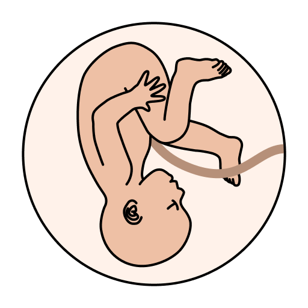
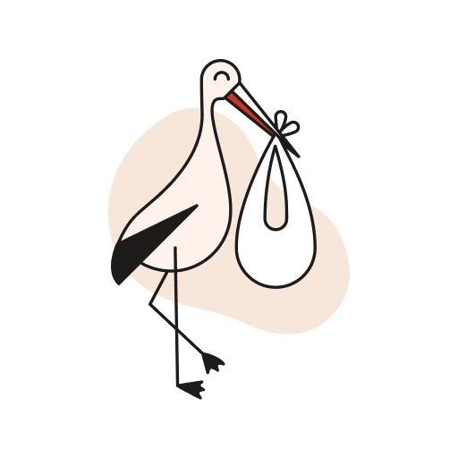

Burde jeg slutte med mine allergimedisiner?
Gravid
Del opplysninger før første svangerskapskontroll
Du har ikke delt opplysningene i ditt digitale helsekort ennå.
Registrer farskap hos Nav
Hvis du ikke er gift med barnets far, kan dere registrere farskap digitalt på nav.no. Dette kan dere gjøre fra uke 22 i svangerskapet.
Les mer og registrer farskap på nav.no (nav.no)Gravid uke 30

Fosteret veier nå rundt 1150 gram.
Fosteret ligner nå et nyfødt barn og kan ha lagt seg til rette med hodet først i bekkenet. Mange kjenner trykk nedover mot bekkenbunnen...
Les mer om hva som skjer i uke 30Svangerskapskontroller
Vis hele oversikten
-
Uke 1-6
Avtal første time og fyll inn kartleggingen. -
Første svangerskapskontroll
Målinger og informasjon -
Uke 11-14
Tidlig ultralyd og NIPT -
Uke 17-19
Ultralyd med terminfastsettelse -
Uke 24
Målinger og informasjon -
Uke 28
Målinger og informasjon -
Uke 32
Målinger og informasjon -
Uke 36
Undersøkelse av leie og informasjon -
Uke 38
Undersøkelse av leie og informasjon -
Uke 40
Undersøkelse av leie og informasjon -
Etterkontroll
Bestill etterkontroll 4-8 uker etter fødselen
Les mer om etterkontroll
Mål av magen
Utført av helsepersonell fra ca uke 24
28cm
28 cm

Nyttig å vite i denne perioden
Se alle artikler og verktøyHuskelapper
Her kan du notere ting du ønsker å ta opp på neste kontroll.
Papirhelsekortet og dokumentasjon
Her kan du laste opp bilder av helsekortet ditt og andre dokumenter det kan være nyttig å ha kopier av. Les mer om papirhelsekortet.
Last opp nytt papirhelsekort Last opp annet dokumentSist opplastet papirhelsekort:
Papirhelsekort (Epikrise, sammenfatning)
Gravid, arkivert 24.09.2026